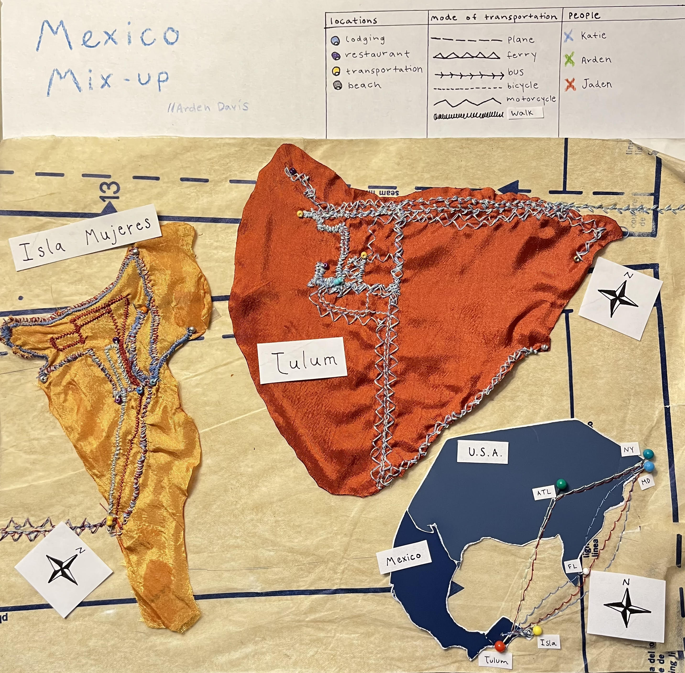
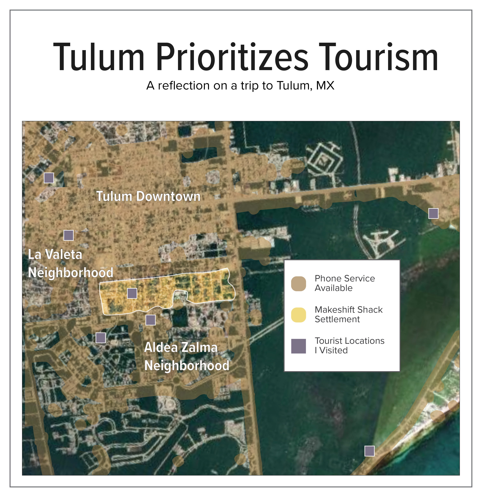

Arden Davis

Interactive Designer + Developer
Tulum Travels
Febuary 2024
Craving an international experience with a low cost, me and my friends met up in Cancun for our overlapping breaks from school. Passing the manicured sorority girls in security at the Atlanta airport at 6am, I was grateful that my friends and I were heading to a place farther off the beaten path.
Before the night was over, me and my friends had met at the airport, rode a bus, a tuk tuk, and finally a ferry to reach Isla Mujeres, a lovely little island off the coast of Cancun. Here we met other travelers, played with puppies at a local animal shelter, and found ourselves learning about the island from the owner of the breakfast place we frequented. This map explores where we went, how we got there, and when we were together.
As the group split, our impression of the region shifted. Walking to our hotel in Tulum, Katie and I were immediately confronted by the deep poverty in Tulum bordering the tourist hotel zone. We stayed in a newly built, instagrammable, security guarded apartment complex that stood juxtaposed to the tents with dirt floors set up one street away. Suspicious that census data may not reliably provide insight into the wealth disparities of the town with so many transient occupants, I sought out other data to provide insight into the developing infrastructure of the town.

Data Source: https://www.nperf.com/en/map/MX/3515040.Tulum/2004799.Telcel-Mobile/signal/
This map uses data about the cell service availability in different areas of tulum. In a town known for its tourism, this map draws attention to the ethics of gentrification and travel. While the areas with the highest quality cell service are the downtown area and “hotel zone”, the areas that completely lack service, specifically that hole in the center, is where hundreds of people live in dirt-floored shacks. I marked the roads Katie and I frequented to highlight the infrastructure designed around tourists. It would be interesting to include the daily paths of those living in these settlements to introduce an alternative perspective to this conversation, revealing the blind-spots city planners, governmental organizations, and tourists overlook.
